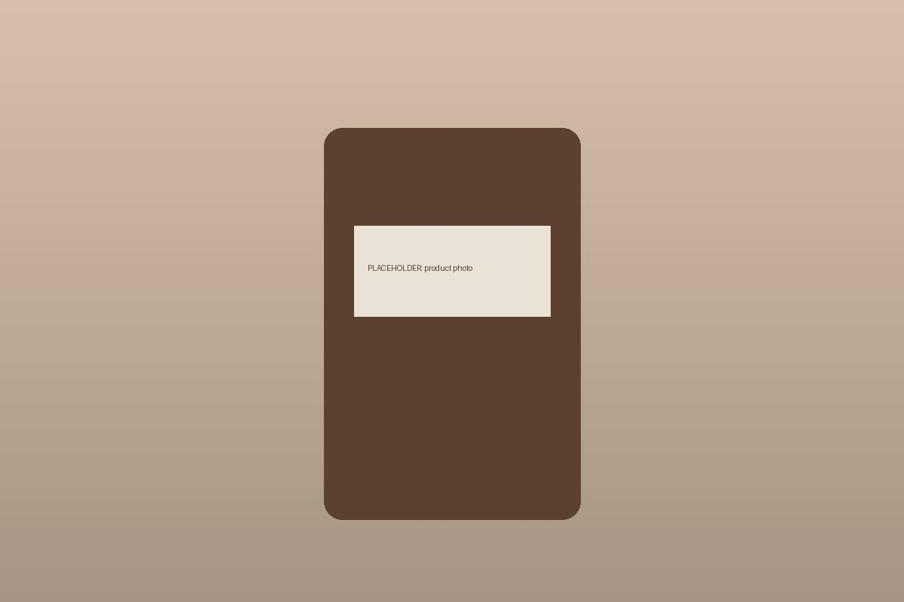

Fresh-roasted coffee at your door
Every two or four weeks, $16 a bag with shipping. Rated 4.7 of 5 in 1,240 reviews.
Start my first bag
- Alder Street Cafe
- Pine and Pour
- Quay Books
- Larch Bakery
- Fen Studio
- Oak Row Diner
How a bag gets to you
- Pick a profileBright, balanced or dark. Change it before any shipment.
- We roast on Monday or ThursdayYour bag is roasted for your order, not pulled from a shelf.
- It ships within 48 hoursThe roast date is printed on the bag.
- Rate it, the next bag adaptsOne tap after each bag moves the next pick toward what you liked.
What is in every box
340 g of whole bean or ground coffeeGround to your brewer if you ask: espresso, filter, French press.
A brew cardDose, water and time for your brewer.
Tasting notesWhere it grew, who farmed it, what to look for in the cup.
The roast dateOn the front of the bag, not on the bottom.
Who it is for
Espresso at homePick dark or balanced, whole bean, every two weeks.
One filter cup a morningOne bag every four weeks lasts about a month for one person.
A small officeSeveral bags per shipment, one invoice.
What subscribers say
The roast date is the reason I switched. Grocery bags never had one.
I skipped two shipments over the summer. No email asking why.
The dark profile pulls well on a cheap espresso machine.
Example quotes, invented for this demo page.
One plan, two speeds
| 340 g bag, roasted for your order | included |
| Brew card and tasting notes | included |
| Shipping in the US | included |
| Skip, pause or cancel online | any time |
$16 a bag
A 340 g bag of specialty coffee at a cafe counter near us costs $19 to $22.
Start my first bagWho roasts it
2019
Two roasters in a former bike shop, roasting since 2019. Every bag on this page comes off the same machine.
Questions
When does my first bag ship?
Within 48 hours of the next roast day.
Can I change the grind or profile?
Yes, from your account before any shipment.
Where do you ship?
The US only for now.
Refunds?
Coffee is roasted to order, so shipped bags are not refunded. You can skip or cancel before the next roast day.